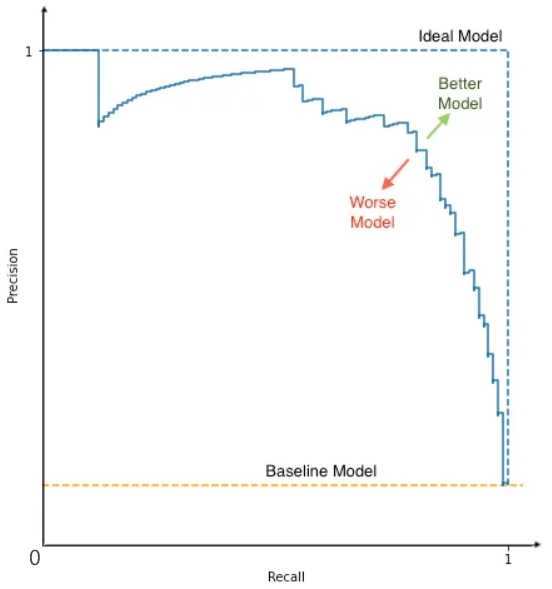
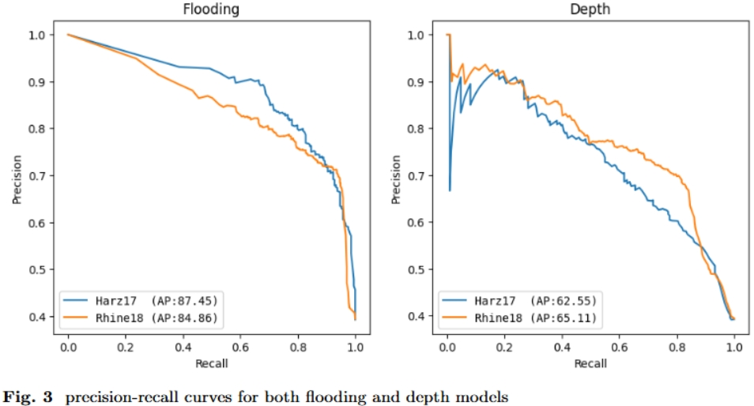

Mean Aveage Precision (mAP) is actually not an easy-understanding metric.
Confusing Matrix
| T\P | A | B | C |
|---|---|---|---|
| A | 11 | 2 | 3 |
| B | 3 | 12 | 1 |
| C | 0 | 7 | 9 |
Normally people draw confusing matrix like this above. Left column is ground Truth (T), first row is the Prediction (P). In this confusing matrix, we have 3 classes, A, B, and C. Each class has 16 samples (sum of each row) which means data is balanced. If the model does a good job, its confusing matrix should have a very clear diagonal. In this example, the model is very confused about class C. Given class C, nearly half of the predictions are B (7/16).
False Positive
False Positve (FP) means that the model did a False (wrong) prediction and it predicted Positive. People use this term FP most frequentyly to represent wrong predictions. Similarly, we have True Positive (TP), False Negative (FN) and True Negative (TN).
For class A,
- TP is 11.
- FP is 3 (predict A but truth is B).
- FN is 5 (give A but predict others).
- TN is 29 (12+1+7+9).
Precision, Recall and F1 Score
Precision: In all positive prediction, what is the percentage of right prediction.
$$Precision(P)=\cfrac{TP}{TP+FP}$$
Recall: Given all positive samples, what is the percentage of right prediction. Sometimes, recall is also called sensitivity.
$$Recall(R)=\cfrac{TP}{TP+FN}$$
Accuracy: In all predictions, what is the percentage of right prediction.
$$Accuracy(A)=\cfrac{TP+TN}{TP+FP+TN+FN}$$
F1 Score: Mix P and R into one single metric.
$$F1=\cfrac{(1+\beta^2)\cdot P\cdot R}{\beta^2\cdot P + R}, \beta=1$$
We can calculate P, R and A for each class, and then average them. This is Macro-averaging which treats all classes equally. Or we can calculate the overall P, R and A. This is Micro-averaging which treats each data point equally. However, mAP is calculcated in a different way. Typically, macro/micro-averaged metrics are calculated under a single fixed threshold. mAP summaries model’s performance by leveraging all possible thresholds.
When Accuracy is Not Suitable?
Accuracy is easy to understand, correction divides all, straightforward. However, accuracy has its downsides. While it does provide an estimate of the overall model quality, it disregards class balance and the cost of different errors. E.g. in multi-class classificationt task, if one class is more prevalent, it might be easier for the model to simply classify samples into that class, and still ends up with a high accuracy. In this case, high accuracy can be confusing.
Say, you are dealing with manufacturing defect prediction. For every new product on a manufacturing line, you assign one of the categories: “no defect,” “minor defect,” “major defect,” or “scrap.” You are most interested in finding defects: the goal is to proactively inspect and take faulty products off the line. The model might be mostly correct in assigning the “no defect” and “scrap” labels but be unreasonable when predicting actual defects. Meanwhile, the accuracy metric might be high due to the successful performance of the majority classes. In this case, accuracy might not be a suitable metric.
Precision-Recall (PR) Curve
The precision-recall curve shows the tradeoff between precision and recalls for different thresholds. It is often used in situations where classes are heavily imbalanced.

Precision-Recall Curve
Generally speaking, while decreasing threshold, model gives us more and more postive predictions which are not always correct. Therefore, precision is not a monotonical falling down. In PR curve, we cannot see thresholds for each data point. However, every point in PR curve is calculated based on a specific threshold. E.g. 1000 points of thresholds from 0.0 to 1.0 with step 0.001. Each threshold gives us a (x,y), and we draw this diagram by connecting all points together. PR curve is more like a probability map. Remember, they are really dots, not real lines!
When Recall=0, Why Precision=1?
Recall=0 means TP=0, typically this happens when threshold is too high. And most likely FP is also 0 simply because the model does not give any positive prediction. So, in this scenario, precision=0/0, we set it to 1.
What is the Baseline?
The baseline refers to the precision you could achieve by simply predicting every instance as positive (threshold is zero). The baseline is equal to the proportion of positive cases in the dataset. In this scenario, FN=0, so Recall=1.
How to Understand Ideal Model?
PR curve consists dots. We connect these dots to line. The ideal model is the model which always give right prediction. Therefore, under any threshold, P=1 and R=1. There are only Three Dots in the curve of ideal model.

Two More PR-curve Examples
AUC-PR and AP
We calculate Average Precision (AP) by integrating Area Under the Curve of PR (AUC-PR). The AUC-PR provides a single value that summarizes the overall performance of the model, which is called AP as well. Higher AUC-PR indicates better performance. Looking at the PR curve, the area of ideal model is 1.
$$AP=\text{AUC-PR}=\sum_{i}(R_i-R_{i-1})\cdot P_i$$
mAP
$$mAP=\cfrac{\sum_n AP}{n}, \text{n is the number of classes}$$
Classification
Whether the output is sigmoid for binary classifications, or softmax for multi-class cases. We can always have a numerical value between 0 and 1 which could be easily thresholded for each class.
Object Detection
To get a TP in object detection task:
- class match: the predicted label match the ground truth
- IoU threshold of bounding box: the spatial overlapping area must be greater than a threshold (localization), such as $mAP_{50}$ which means the IoU threshold is set to $0.5$.
If the model correctly predicts the class label, but IoU is less than threshold, or the model fails to predict truth label, we give it as a FP. If multiple boxes predict the same object, only the highest-IoU one is a TP; the rest are all FP. Some of FP have zero IoU, which are hallucinations of object detection models. Therefore, threshold is applied on IoU in object detection task!
TP and FP are about model’s predictions. FN is about the ground truths which are unmatched by any predictions. There are two cases for FN:
- if there is no box predicts that class label
- if all predictions for that class label are FP
Normally, people don’t calculate TN in object detection task.